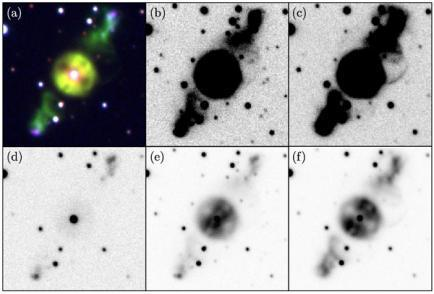
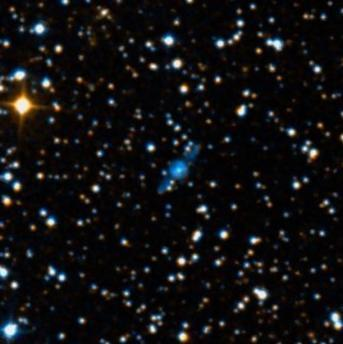

ETHOS 1 (not THAT Ethos)
- Name: ETHOS 1
- RA/Dec: 19 16 31.5 +36 09 48
- Size: 19"
- Mag: V ≈ 15
- Type: PN
- Aliases: PN G068.1+11.0
ETHOS -- that's the Extremely Turquoise Halo Object Survey, which seeks to find compact, high galactic latitude planetary nebulae that would normally be missed by searches close to the galactic equator. ETHOS 1 lies at a galactic latitude of 11°, just beyond the 10° range, where PN are typically found.
Discovery images revealed twin jet outflows oriented northwest and southeast, extending from a compact, circular disc, ~12" diameter. Follow-up studies also revealed a very tight, binary central star, hypothesized to be responsible for the symmetric bi-polar jets.
A December 2010 announcement can be read here or you can read the full 2011 MNRAS paper "ETHOS 1: a high-latitude planetary nebula with jets forged by a post-common-envelope binary central star"
The paper includes the following montage using various filters (the color image is a composite of H-alpha and [N II])

Here's a general field in the "colorized" DSS from WikiSky. The bright star towards the upper left is mag 10.6 and just 2.8' ENE of Ethos 1.

This object was high on my observing list during a visit to Jimi's in 2011. How much of this structure was visible and could the jets be seen? Here are my notes ...
At 375x, a very small round glow, ~15" diameter, was easily seen surrounding a faint central star. Very faint wings or jets extended SW and NE. At 488x the jets were easily visible with a Sloan G filter. With this combination, the planetary resembled an edge-on galaxy, ~40" in length, with a brighter core. A faint star (actually a double) is near the SE tip, while the NW extension has a faint star (also double) just east of the tip. The jets were visible without a filter, though not as well defined.
I believe an 18" will show at least the central region in excellent conditions. From a not-so-dark site on the outskirts of the San Francisco bay area Ethos 1 was visible in my 24-inch, the central portion was picked up at 225x, but was better seen at 285x. I tried an NPB filter, but contrast was only improved marginally at 225x, if at all. I wasn't certain if the "jets" were visible in these mediocre conditions. Helping to pinpoint the location is a 48" string of three mag 13.3/13.7/14.3 stars about 1.5' N of Ethos 1 and a mag 15 star just 35" NE.
If you've already tried this object, what were the results? Otherwise as always ...
“GIVE IT A GO AND LET US KNOW”
GOOD LUCK AND GREAT VIEWING!